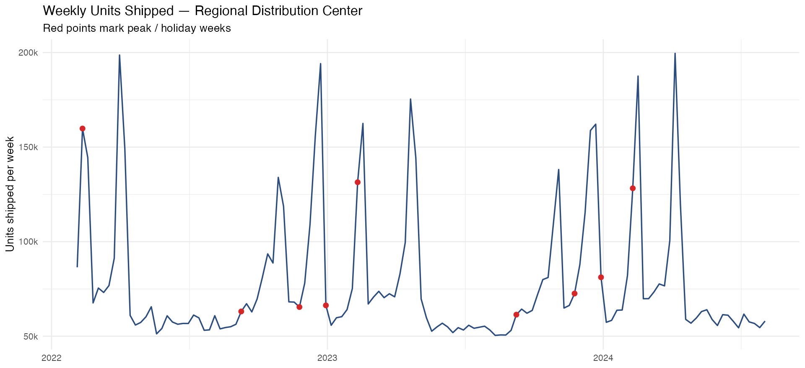

A 24-week-ahead demand forecasting pipeline for a regional distribution center —
built on tidymodels + modeltime, shipped as a
Dockerized REST API with vetiver, and written to be defensible
line-by-line in a code review.
A regional distribution center wanted a forecast it could hand the ops team every Monday: how many units are we going to ship over each of the next 24 weeks, with enough lead time to staff trucks, drivers, and temp labor? The series is dominated by a big early-February holiday peak — miss that peak and the ops team ends up paying overtime and scrambling carriers. The cost of under-forecasting a peak is materially higher than the cost of over-forecasting a quiet week, which means the model can't just be accurate in aggregate; it has to be specifically resistant to missing the February spike.
Feb 2022 → Aug 2024. Target is weekly_units; three regressors: holiday flag, temperature, transport cost index.
Auto-ARIMA vs. boosted ARIMA vs. Prophet, all sharing one recipe. Selection by RMSE; MAPE reported to stakeholders.
RMSE 24,051 on a held-out 24-week test window. Refit on full data and forecast forward 24 weeks.
Best workflow wrapped in vetiver_model(), pinned locally, generated into a Docker image, and pinned to an S3 board for graded hold-out scoring.
The full write-up lives on the project page.
Every metric and plot is reproducible by running forecast_pipeline.R
in RStudio — the script is commented line-by-line so the reasoning travels with the code.
